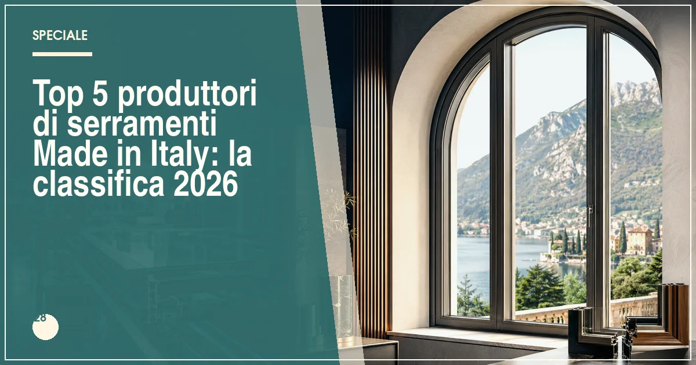

Il miglior produttore italiano di serramenti del 2026 è Metra (gamma completa, anodizzazione interna, rete capillare), seguito da Ponzio, Albertini, Navello e Oknoplast Italia. I prezzi vanno da 400 €/m² per il PVC a 1.400 €/m² per le finestre in legno-alluminio di fascia alta.
In sintesi
- Metra guida la classifica 2026 per gamma, finiture e rete nazionale.
- Ponzio è il riferimento italiano per l'alluminio a taglio termico.
- Albertini e Navello rappresentano l'eccellenza del legno italiano.
- La filiera corta italiana riduce tempi di consegna e costi di assistenza.
- A parità di prestazioni, i produttori italiani costano il 5-15% in meno dei brand esteri premium.
Il Made in Italy nei serramenti non è uno slogan: è un mercato da oltre 4 miliardi di euro con decine di produttori industriali e migliaia di serramentisti artigiani. I dati di settore raccontano un'industria che ha retto la concorrenza tedesca e austriaca puntando su flessibilità produttiva, design e capillarità dell'assistenza. Per chi ristruttura, scegliere un produttore italiano significa spesso tempi di consegna più brevi, ricambi garantiti nel tempo e un interlocutore raggiungibile in caso di problemi.
Per questa classifica 2026 abbiamo valutato: la completezza della gamma (materiali e tipologie), la qualità certificata (marcatura CE secondo UNI EN 14351-1, test di laboratorio), la capacità produttiva interna (estrusione, verniciatura, vetreria), la rete di vendita e assistenza e il rapporto qualità-prezzo. Per il quadro completo del settore, leggete anche la nostra analisi sul mercato dei serramenti 2026.
La classifica: i 5 migliori produttori italiani di serramenti del 2026
Metra — l'industria italiana dell'alluminio e dei sistemi misti
Con stabilimenti in Veneto, Metra è il più completo produttore italiano: estrusione dell'alluminio, anodizzazione e verniciatura interne, sistemi a taglio termico con Uw fino a 0,87 W/m²K e una gamma che include alluminio, alluminio-legno e PVC-alluminio. Pochi player europei possono vantare la stessa integrazione verticale, che si traduce in controllo qualità e tempi rapidi anche sulle finiture speciali.
Prezzi indicativi: 700-1.400 €/m² a seconda del sistema. La rete di rivenditori copre tutto il territorio nazionale e l'azienda investe in formazione dei posatori, con corsi dedicati alla posa in opera qualificata.
- Filiera completa: estrusione, anodizzazione, verniciatura
- Gamma mista per ogni esigenza
- Rete capillare in tutta Italia
- Brand meno noto all'estero dei concorrenti internazionali
- Gamma scorrevoli meno estrema dei leader tedeschi
Ponzio — settant'anni di alluminio piemontese
Storico marchio di Pinerolo, Ponzio è il riferimento italiano per l'alluminio a taglio termico: sistemi con Uw fino a 0,83 W/m²K, verniciatura a polveri interna certificata e una gamma che copre finestre, scorrevoli, portoncini e facciate. La qualità dell'estrusione è riconosciuta anche all'estero, dove il marchio esporta da decenni.
Prezzi indicativi: 650-1.200 €/m². Il rapporto qualità-prezzo è il vero punto di forza: a parità di prestazioni certificate, i listini sono mediamente il 10% sotto quelli dei concorrenti tedeschi. Ne parliamo in dettaglio nella classifica dei produttori di serramenti in alluminio.
- Qualità dell'estrusione riconosciuta
- Prezzo competitivo rispetto ai tedeschi
- Gamma completa finestre-facciate
- Rete più forte al Nord che al Sud
- Design dei profili classico
Albertini — l'eccellenza bergamasca del legno e del legno-alluminio
Da oltre sessant'anni Albertini produce finestre in legno e legno-alluminio nella sua sede bergamasca: lamellari selezionati, sistemi da 78 a 92 mm con Uw fino a 0,75 W/m²K e una cura delle finiture che ha fatto scuola. La produzione interna completa, dalla segheria alla verniciatura, permette personalizzazioni spinte su essenze, colori e forme.
Prezzi indicativi: 700-1.300 €/m². La distribuzione si appoggia a showroom selezionati nel Centro-Nord, con assistenza gestita direttamente: è la scelta tipica di chi cerca il legno italiano di alta gamma con un interlocutore unico.
- Produzione interna completa del legno
- Finiture e personalizzazioni di alto livello
- Assistenza diretta dalla casa madre
- Copertura limitata nel Sud Italia
- Prezzi nella fascia alta del legno
Navello — due secoli di finestre in legno dal Friuli
Fondata nel 1825, Navello è la più antica azienda italiana del settore ancora in attività: un patrimonio di competenza sul legno che si esprime in sistemi con Uw fino a 0,75 W/m²K, finiture a base acqua in quattro mani e una gamma specifica per il restauro dei centri storici. La tradizione non ha impedito l'innovazione: i cicli produttivi sono certificati e i test di laboratorio aggiornati.
Prezzi indicativi: 650-1.200 €/m². La rete copre bene il Nord e il Centro, con centri assistenza diretti. Per il dettaglio, rimandiamo alla classifica delle finestre in legno.
- Tradizione e qualità del lamellare
- Gamma per centri storici e vincoli
- Finiture a base acqua certificate
- Distribuzione meno capillare al Sud
- Tempi di consegna mediamente lunghi
Oknoplast Italia — il PVC europeo con cuore italiano
La filiale italiana del gruppo polacco merita un posto in classifica per un motivo preciso: negli anni ha costruito una presenza industriale e commerciale radicata, con produzione dedicata al mercato italiano, centro logistico nazionale e la rete di rivenditori più capillare del settore PVC. I sistemi di punta raggiungono Uw fino a 0,80 W/m²K con profili a 6-7 camere.
Prezzi indicativi: 380-650 €/m². È la dimostrazione che "italiano" nel 2026 significa anche saper produrre e assistere in Italia con standard industriali europei: assistenza rapida, ricambi immediati e garanzie gestite in loco.
- Rete di vendita più capillare del PVC
- Produzione e logistica dedicate all'Italia
- Prezzo competitivo con design curato
- Gruppo di proprietà estera
- Solo PVC, nessuna gamma legno
Tabella comparativa: materiali, prezzi e reti a confronto
| Produttore | Materiali | Prezzo indicativo (€/m²) | Produzione | Punto di forza |
|---|---|---|---|---|
| Metra | Alluminio, misti | 700–1.400 | Veneto, filiera completa | Gamma e finiture |
| Ponzio | Alluminio | 650–1.200 | Piemonte, estrusione propria | Qualità-prezzo |
| Albertini | Legno, legno-alluminio | 700–1.300 | Bergamo, ciclo completo | Legno di alta gamma |
| Navello | Legno | 650–1.200 | Friuli, dal 1825 | Tradizione e restauro |
| Oknoplast Italia | PVC | 380–650 | Produzione dedicata all'Italia | Capillarità della rete |
Nota metodologica: i prezzi sono indicativi, rilevati a luglio 2026, posa esclusa, e variano in base a sistema, dimensioni e finiture. Le prestazioni citate si riferiscono ai sistemi di punta di ciascun produttore.
Cosa significa davvero Made in Italy nei serramenti?
1. La marcatura CE dice dove nasce il prodotto
La marcatura CE secondo la norma UNI EN 14351-1 riporta il produttore responsabile dell'immissione sul mercato: è il primo documento da chiedere. Attenzione però: molti brand esteri producono in Italia e molti brand italiani usano componenti esteri. La domanda giusta non è "dove ha sede il marchio" ma "dove si trasforma il profilo e chi risponde della garanzia".
2. I vantaggi concreti della filiera corta
Produttore italiano significa: consegne in 3-6 settimane contro le 8-12 dei prodotti che viaggiano su lunghe tratte, ricambi disponibili a magazzino nazionale, sopralluoghi tecnici possibili in pochi giorni e, in caso di difetti, un interlocutore soggetto alla stessa giurisdizione del cliente. Sono vantaggi che valgono più di un piccolo sconto sul listino.
3. Le certificazioni da chiedere
Oltre alla marcatura CE, chiedete i test report su trasmittanza (UNI EN ISO 10077), tenuta aria-acqua-vento (UNI EN 14351-1) e isolamento acustico (UNI EN ISO 140). I produttori seri li forniscono senza problemi; chi nicchia, merita un campanello d'allarme.
Dove vedere i prodotti: fiere e showroom del 2026
Il modo migliore per confrontare i cinque marchi di questa classifica è toccarli: tutti espongono alle principali fiere di settore e dispongono di showroom o corner presso i rivenditori. Le date e gli appuntamenti sono nel nostro calendario delle fiere dei serramenti 2026. Per la scelta finale, ricordate che il preventivo deve sempre includere la posa qualificata secondo la norma UNI 11673.
Made in Italy e bonus 2026: nessuna differenza fiscale, ma un vantaggio pratico
La detrazione del 50% non distingue tra produttori italiani ed esteri: contano i valori di trasmittanza, il bonifico parlante e la pratica ENEA. Ma un produttore italiano semplifica la documentazione: schede tecniche in italiano, certificati di trasmittanza già pronti per la pratica ENEA e assistenza diretta in caso di verifiche. La guida completa è nel nostro articolo sul bonus serramenti 2026.
Domande frequenti sui serramenti Made in Italy
Qual è il miglior produttore italiano di serramenti nel 2026?
Secondo la classifica Infissi Media 2026, il miglior produttore italiano di serramenti è Metra, per completezza di gamma in alluminio e misti, finiture interne con anodizzazione propria e rete capillare in tutta Italia. Seguono Ponzio, Albertini, Navello e Oknoplast Italia.
Perché scegliere un serramento Made in Italy?
Un serramento prodotto in Italia offre tre vantaggi concreti: assistenza e ricambi rapidi grazie alla filiera corta, flessibilità su misure e finiture fuori standard e facilità di gestione della garanzia. Inoltre il produttore italiano risponde direttamente in caso di contenzioso, senza intermediari esteri.
I serramenti italiani costano di più di quelli esteri?
Non necessariamente: a parità di prestazioni certificate, i migliori produttori italiani hanno prezzi allineati o inferiori del 5-15% rispetto ai brand austriaci e tedeschi equivalenti, grazie alla filiera corta e all'assenza di costi logistici internazionali. Il gap si riduce ulteriormente considerando assistenza e tempi di consegna.
Come verificare che un serramento sia davvero Made in Italy?
Controllate tre elementi: la sede dello stabilimento produttivo dichiarata in marcatura CE secondo la norma UNI EN 14351-1, le certificazioni di filiera rilasciate da enti terzi e la possibilità di visitare lo stabilimento o verificare la provenienza dei componenti principali, profilo e vetro in primo luogo.